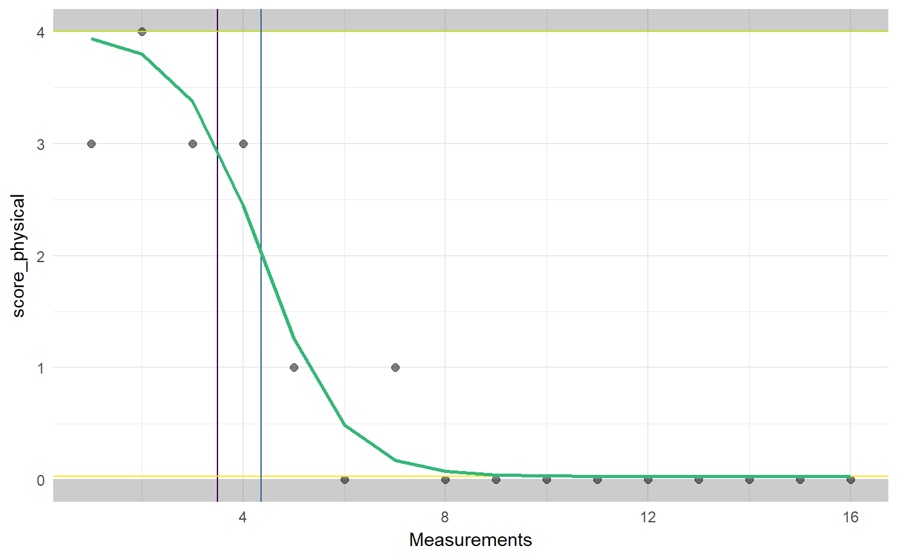

This function implements the generalized logistic analysis introduced in Verboon & Peters (2017). This analysis fits a logistic function (i.e. a sigmoid) to a data series. This is useful when analysing single case designs. The function enables easy customization of the main plot elements and easy saving of the plot with anti-aliasing. ggGenLogPlot does most of the plotting, and can be useful when trying to figure out sensible starting and boundary/constraint values. genlogCompleteStartValues tries to compute sensible starting and boundary/constraint values based on the data.
genlog(data, timeVar = 1, yVar = 2, phaseVar = NULL, baselineMeasurements = NULL, yRange = NULL, startX = NULL, startBase = NULL, startTop = NULL, startGrowthRate = NULL, startV = 1, changeInitiationBounds = NULL, growthRateBounds = c(-2, 2), baseMargin = c(0, 3), topMargin = c(-3, 0), baseBounds = NULL, topBounds = NULL, vBounds = c(1, 1), colors = list(bounds = viridis(4)[4], curve = viridis(4)[3], mid = viridis(4)[2], intervention = viridis(4)[1], points = "black"), alphas = list(outsideRange = .2, bounds = 0, points = .5, mid = 0), theme = theme_minimal(), pointSize = 2, pointAlpha = 0.5, lineSize = 0.5, initialValuesLineType = "blank", curveSizeMultiplier = 2, showPlot = TRUE, plotLabs = NULL, outputFile = NULL, outputWidth = 16, outputHeight = 16, ggsaveParams = list(units = "cm", dpi = 300, type = "cairo"))
| data | The dataframe containing the variables for the analysis. |
|---|---|
| timeVar | The name of the variable containing the measurement moments (or an index of measurement moments). An index can also be specified, and assumed to be 1 if omitted. |
| yVar | The name of the dependent variable. An index can also be specified, and assumed to be 2 if omitted. |
| phaseVar | The variable containing the phase of each measurement. Note that this normally should only have two possible values. |
| baselineMeasurements | If no phaseVar is specified, |
| yRange | This can be used to manually specify the possible values that the dependent variable can take. If no |
| startX, startBase, startTop, startGrowthRate, startV | The starting values used when estimating the sigmoid using |
| changeInitiationBounds, growthRateBounds, baseMargin, topMargin, baseBounds, topBounds, vBounds | These values specify constraints to respect when estimating the parameters of the sigmoid function using |
| colors | The colors to use for the different plot elements. |
| alpha | The alpha values (transparency, or rather, 'obliqueness', with 0 indicating full transparency and 1 indicating full visibility) to use for the different plot elements. |
| theme | The theme to use in the plot. |
| pointSize,lineSize | The sizes of points and lines in the plot. |
| pointAlpha | The alpha channel (transparency, or rather, 'opaqueness') of the points. |
| initialValuesLineType | The line type to use for the initial values; by default set to |
| curveSizeMultiplier | A multiplyer for the curve size compared to the other lines (e.g. specify '2' to have a curve of twice the size). |
| showPlot | Whether to show the plot or not. |
| plotLabs | A list with arguments to the |
| outputFile | If not |
| outputWidth, outputHeight | The dimensions of the plot when saving it (in units specified in |
| ggsaveParams | The parameters to use when saving the plot, passed on to |
For details, see Verboon & Peters (2017).
Mainly, this function prints its results, but it also returns them in an object containing three lists:
The arguments specified when calling the function
Intermediat objects and values
The results such as the plot.
Verboon, P. & Peters, G.-J. Y. (2018) Applying the generalised logistic model in single case designs: modelling treatment-induced shifts. PsyArXiv https://doi.org/10.17605/osf.io/ad5eh
### Load dataset data(Singh); ### Extract Jason dat <- Singh[Singh$tier==1, ]; ### Conduct piecewise regression analysis genlog(dat, timeVar='time', yVar='score_physical', phaseVar='phase');#> Generalized Logistic Analysis (N = 16) #> #> Estimated sigmoid association between time and score_physical. #> #> Parameter starting values [and constraints]: #> Onset of change: 7* [2; 12]* #> Curve base: 0* [0; 3]* #> Growth rate: 0* [-2; 2] #> Curve top: 4* [1; 4]* #> V parameter: 1 [1; 1] #> #> Note: Asterisks (*) denote values that were not specified manually (but inferred by genlog). #> #> Parameter estimates: #> #> Curve base (plateau before change): 0.031 #> Growth rate: -1.241 #> Change maximal at: 4.355 #> Curve top (plateau after change): 4 #> #> Model fit and effect sizes estimates: #> #> Deviance: 2.374 #> R squared: 0.923 #> Effect Size 1: 2.764 #> Effect Size 2: 0.992